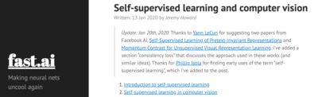

今回のテーマ「実践」
前回振り返った原点
- 「誰でもできるAI」
- 「理系でなくてもできるAI」
- 「コピペでできるAI」
楽しんでいきましょう。
今回の内容
- 『ニューラルネットの基本的なテクニック』古川
- 『最近の話題から、実践編』市來
目次
- [6:30 - 7:00]（前座）『数理クイズ』
- [7:00 - 8:00] 『ニューラルネットの基本的なテクニック』古川
- [8:00 - 9:00] 『最近の話題から、実践編』市來
数理クイズ
- ちょっと趣向を変えて
- 対話が大事かな、と
- （前回のフォーラムで思ったこと）
- 目指すもの
「誰でもできるAI」 「理系でなくてもできるAI」 「コピペでできるAI」
- プログラミング
- コンピュータとコミュニケーションする手段
- （外国の人とコミュニケーションしたくて、外国語を勉強している人をイメージ）
- 2020年の今、今後１０年を考えて、
プログラミングできなくて大丈夫ですか？
- 目指すもの
- 今日のテーマ『実践』
- （今日の裏テーマ『ゆるＡＩ』）
- プログラミングの実践とは？
- 数理
- 日常と数理を結びつけることが大事かな、と
- それで『数理クイズ』
- なんでクイズか？
- 出題時に、回答する必要がないから！
- （準備する時間が足りませんでした）
問い「人生、その時々の興味の赴くまま学んでいって大丈夫ですか？」
- （極めて日常的なステートメント）
- モデル化しましょう
- 「ランダム・ウォーク」
- 最初、あなたは、ある場所 x0 にいます。
- 一定時間間隔 dt ごとに、任意の方向に距離 dr 移動します。
- （「任意の方向」というのが「その時々の興味の赴くまま」に 対応しています）
- このとき、未来のある時点 t でのあなたのいる場所 x(t) に ついて考えましょう！
- 「ランダム」から「統計」
- 「任意の方向に」と書いた通り、どこにいくか分かりません。
- あなた以外に１０人の人が同じルールに従えば、 それぞれ違うステップを歩み、最終的に別々の場所にいるでしょう（一般に）
- （例えば、ある領域が「成功ゾーン」、別の領域が「失敗ゾーン」とすると） 「成功するか」「失敗するか」は運次第ということになります。
- 「出発点 x0 からどれだけ遠くに行けるか」を、 「あなたがどれだけ成長したか」と解釈することにしましょう。
- 統計的事象について、なにか明確な主張をしたければ （「運がよかった、悪かった」以上の）、 なんらかの統計処理を行う必要があります。
- たくさんの事象（あるいは沢山の人）に対して「平均をとる」と、 平均的な傾向が分かってきます。
- 「その時々の興味の赴くままに学んで行って、成長しますか？」
- という問いに、答えてみよう！
関連する（おもしろそうな）話題
- 「乱数」について：
- 乱数について、一様乱数は [0, 1) を一定の確率で返してくれる。
- 正規分布（ガウス分布）に従う乱数を生成するには、どうするか？
- 円周上に均一に分布する乱数を生成する方法？
- 円内に均一に分布する乱数を生成する方法？
- 球面上（球の内側）に均一に分布する乱数
- d 次元空間の超球面上に均一に分布する乱数
- 参考文献： Numerical Recipes, The Art of Computer Programming Vol.2 (Knuth), GNU Scientific Library
- 「ランダム・ウォーク」について
- 「地球上であるとき出会った二人は、 その後再び出会うことはできるのでしょうか？」
- 「宇宙であるとき出会った二人は、 その後再び出会うことはできるのでしょうか？」
- 「d次元空間であるとき出会った二人は、果たして その後再び出会うことはできるのでしょうか？」
第１部：『ニューラルネットの基本的なテクニック』古川郁衣さん
ニューラルネットの簡単なテクニックとその効果の確認を行っていきます。
label smoothingとかTTAとか、、
コードも後で公開するので、誰でもできます。
最近の話題から、実践編
- 最近の話題として、２つのネタをピックアップします。
- Vision Transformer
- 「Attention Is All You Need」(arxiv 1706.03762) から始まった Transformer （の快進撃)
- そもそも LSTM に導入された attention mechanism が、
「これだけでいいんじゃね？」
というノリ（？）で始まったもの - NLP で既存の手法 (RNN, LSTM) を根こそぎ淘汰した後、
- 音声方面にも活用されつつあって、
- シーケンス・データでなかった「画像」はここまで CNN が頑張ってきたが、
- とうとう Transformer の魔の手が忍び寄ってきた！
- という論文
- （死神の meme 画像、見かけたはずなのに見つからなかった…
誰か、見つけたら、教えてください！）
- Bootstrap Your Own Latent
- 強化学習にめちゃくちゃ力入れてる DeepMind の論文。
- self supervised learning の最新の方法論
- ラベルなしデータセットで、特徴量を学習させる計算手法
- これまで長らく、巧みの技の世界だったらしい
cf. Jeremy のブログ記事 (Self-supervised learning and computer vision)

(Written: 13 Jan 2020 by Jeremy Howard) - グーグルの SimCLR
(Advancing Self-Supervised and Semi-Supervised Learning with SimCLR)
(Wednesday, April 8, 2020) - これでもずいぶんシンプルになったところを、
「ネガティブ・サンプル」すら準備する必要なくなった！
というのが BYOL
- Vision Transformer
- なにが「実践編」？
- 話題提供だけなら、今までの「最近の話題から」と同じですね。
- この２つの手法を、
「勉強する」「論文を読んでみる」のではなく、
理解する前に、実際に使ってみよう！
という意味です。 - やること：
- ViT を使って「五郎島分類」
- BYOL を使って「五郎島分類」
- BYOL を使って「Dog Breed 分類」
Vision Transformer
- OpenReview: An Image is Worth 16x16 Words: Transformers for Image Recognition at Scale
- PDF
- github: google-research/vision_transformer - 公式実装 (JAX)
- github: lucidrains/vit-pytorch - pytorch 実装
- 画像認識の革新モデル！脱CNNを果たしたVision Transformerを徹底解説！ (2020.10.16)
- Qiita 画像認識の大革命。AI界で話題爆発中の「Vision Transformer」を解説！ (@omiita updated at 2020-10-24)
- PDF
BYOL: Bootstrap Your Own Latent
- arxiv 2006.07733
Bootstrap your own latent: A new approach to self-supervised Learning
(Jean-Bastien Grill, et al.)- PDF
- github: deepmind/deepmind-research/tree/master/byol - official 実装 (by deepmind)
- github: lucidrains/byol-pytorch - pytorch 実装
- PDF
- Understanding self-supervised and contrastive learning with "Bootstrap Your Own Latent" (BYOL)
(Aug 24, 2020 • Abe Fetterman, Josh Albrecht)
- 上の lucidrains によると
There is now new evidence that batch normalization is key to making this technique work well
- 上の lucidrains によると
- arxiv 2010.10241
BYOL works even without batch statistics
(Pierre H. Richemond, et al.)- PDF

- 上の lucidrains によると
A new paper has successfully replaced batch norm with group norm + weight standardization, refuting that batch statistics are needed for BYOL to work
- PDF
- YouTube: BYOL: Bootstrap Your Own Latent: A New Approach to Self-Supervised Learning (Paper Explained)
- 自己教師あり学習法 BYOL (Published on 6/26, 2020)
- arxiv 2011.10566
Exploring Simple Siamese Representation Learning
(Xinlei Chen, Kaiming He) - ちなみに、なんで BYOL という名前をつけたのか？
- Wikipedia BYOB
BYOB is an acronym that means "bring your own bottle" or "bring your own booze". BYOB is a later variant of the earlier expression, BYOL meaning "bring your own liquor."
- ということで、パーティのホストが
「酒は飲みたい人が勝手に持ってきてね （オレは準備しねーぞ）」
という言葉 BYOL をもじった、ということらしい
- Wikipedia BYOB

{kind=link}
{kind=link}
{kind=link}
{kind=link}
{kind=link}
{kind=link}
{kind=link}
{kind=link}
{kind=link}
{kind=link}
{kind=link}
{kind=link}
{kind=link}
{kind=link}